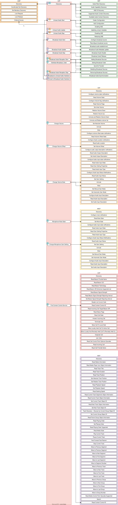

LE Audio 协议栈
总体设计
LE Audio 协议栈的总体设计原则是：在结构和命名上都尽可能贴近规范来实现。大多数 API 函数都以规范的缩写为前缀（例如基本音频配置文件（BAP）使用 bt_bap，音量控制配置文件（VCP）使用 bt_vcp）。在适用的情况下，函数名还会进一步加上各配置文件中具体角色的前缀（例如 bt_bap_unicast_client_discover() 和 bt_vcp_vol_rend_set_vol()）。通常，配置文件或服务规范定义的每个过程（procedure）都对应一个函数，此外还有一些不对应任何过程的辅助函数或元函数。
文件结构通常也遵循这一原则：BAP 相关文件以 bap 为前缀，VCP 相关文件以 vcp 为前缀。如果文件专用于某个配置文件角色，文件名中也会包含该角色。
通用音频框架（GAF）
通用音频框架（Generic Audio Framework，GAF）被视为 Bluetooth LE Audio 架构的中间件。GAF 包含一系列配置文件和服务，使上层应用程序和配置文件能够建立流、调节音量、控制媒体和电话等。GAF 构建于 GATT、GAP 和同步信道（isochronous channels，ISO）之上。
GAF 使用 GAP 来连接、广播以及与其他设备同步；使用 GATT 来配置流、将流与内容（例如媒体或电话）关联、控制音量等；使用 ISO 承载音频流本身，包括单播（有连接）音频流和广播（无连接）音频流。
GAF 强制要求使用 LC3 编解码器，但也支持其他编解码器。
顶层配置文件 TMAP 和 HAP 不属于 GAF，而是对如何使用 GAF 提出顶层要求。
GAF 及顶层配置文件在 Zephyr 中按以下结构实现。
配置文件依赖关系
LE Audio 配置文件依赖其他配置文件和服务，具体如下表所示。在这些表中，“Server”指针对特定服务承担 GATT 服务器角色，“Client”指针对特定服务承担 GATT 客户端角色。如果某个配置文件角色依赖另一个配置文件，而后者又依赖某个服务，那么该依赖关系也隐式地适用于前者。例如，如果 CAP Acceptor 使用 BAP Unicast Server 角色，那么对 ASCS Server 和 PACS Server 的要求同样适用于 CAP Acceptor。
流控制（BAP）的依赖关系如下表所示。
注：
如表所示，Broadcast Source 角色不依赖任何其他 LE Audio 配置文件或服务
内容控制（MCP 和 CCP）的依赖关系如下表所示。
Media Control Server |
Media Control Client |
|
|---|---|---|
GMCS Server |
M |
|
GMCS Client |
M |
|
MCS Server |
O |
|
MCS Client |
O |
|
OTS Server |
O |
|
OTS Client |
O |
Call Control Server |
Call Control Client |
|
|---|---|---|
GTBS Server |
M |
|
GTBS Client |
M |
|
TBS Server |
M |
|
TBS Client |
M |
渲染控制（MICP 和 VCP）的依赖关系如下表所示。
Microphone Controller |
Microphone Device |
|
|---|---|---|
MICS Server |
M |
|
MICS Client |
M |
|
AICS Server |
O |
|
AICS Client |
O |
Volume Renderer |
Volume Controller |
|
|---|---|---|
VCS Server |
M |
|
VCS Client |
M |
|
VOCS Server |
O |
|
VOCS Client |
O |
|
AICS Server |
O |
|
AICS Client |
O |
GAF 的最后一个组成部分是过渡与协调控制（CAP 和 CSIP），其依赖关系如下表所示。
注：
C.1：至少支持 BAP Unicast Client 或 BAP Broadcast Source 之一
C.2：至少支持 BAP Unicast Server 或 BAP Broadcast Sink 之一
C.3：若支持 BAP Broadcast Sink 则为必需
C.4：若支持 BAP Scan Delegator 则为必需
C.5：若支持 BAP Unicast Client 则为必需
C.6：至少支持其中之一
C.7：若属于某个协调集（coordinated set）则为必需
C.8：若 Commander 发送 CAP 通告（announcement）则为必需
Set Member |
Set Coordinator |
|
|---|---|---|
CSIS Server |
M |
|
CSIS Client |
M |
更高层配置文件（GMAP、HAP、PBP 和 TMAP）的依赖关系如下表所示。
注：
C.1 若 UGT 支持 UGT Sink 功能则为必需
C.2 若 UGT 支持 UGT Source 功能则为可选
注：
C.1 若 HA 支持音量平衡（Volume Balance）功能且属于双耳助听器集（Binaural Hearing Aid Set），则为必需
C.2 若 HA 支持 BAP Audio Source 角色则为必需
C.3 若 HA 能够成为双耳助听器集（Binaural Hearing Aid set）的一部分，则为必需
C.4 若配备电池
C.5 若支持 CCP Call Control Server
Public Broadcast Source |
Public Broadcast sink |
Public Broadcast Assistant |
|
|---|---|---|---|
CAP Initiator |
M |
||
CAP Acceptor |
M |
||
CAP Commander |
M |
||
BAP Broadcast Assistant |
M |
注：
C.1 若 BAP Unicast Server 作为 Audio Sink，则必须支持
Bluetooth 音频协议栈状态
下表列出了 Bluetooth 音频协议栈中各配置文件的当前状态和支持情况。
使用 Bluetooth 音频协议栈
要使用 Bluetooth 音频协议栈中的任何配置文件（包括 GAF 之外的顶层配置文件），必须启用 CONFIG_BT_AUDIO。启用该 Kconfig 选项后，才能启用 Bluetooth 音频协议栈中的各个配置文件。每个配置文件通常可以单独启用，但启用较高层的配置文件（例如 CAP、TMAP 和 HAP）通常需要同时启用部分较低层的配置文件。
不过，也可以构建只使用流控制（例如仅使用 BAP）而不使用任何内容控制或渲染/采集控制配置文件的设备，反之亦然。但使用较高层的配置文件通常能带来更好的用户体验，以及与其他设备更好的互操作性。
通用音频配置文件（CAP）
通用音频配置文件对较低层的配置文件提出了限制和要求。CAP 中的过程作用于一个或多个设备上的一个或多个流，因此通过 CAP，只需一次函数调用即可在多个设备上建立多个流。
下图展示了 CAP 中各过程的完整结构，以及它们与其他配置文件中过程的对应关系。标有 I、A 和 C 的圆圈分别表示该过程是否有 CAP Initiator、CAP Acceptor 和 CAP Commander 角色的主动参与或相应要求。

CAP 的 API 参考见 通用音频配置文件。
流控制（BAP）
流控制由基本音频配置文件（BAP）实现。该配置文件定义了多个角色：
Unicast Client
Unicast Server
Broadcast Source
Broadcast Sink
Scan Delegator
Broadcast Assistant
每个角色都可以单独启用，也可以同时支持多个角色。
关于流控制服务的说明
使用基本音频配置文件进行流控制时，主要用到 3 个服务。
音频流控制服务（ASCS）
ASCS 是专门用于建立单播流的服务，位于 BAP Unicast Server 设备上。该服务公开一个或多个端点（endpoint），从 Unicast Server 的角度看，这些端点可以是 sink 端点或 source 端点。也就是说，sink 端点上的音频总是从 Unicast Client 流向 Unicast Server，而 source 端点上的音频总是从 Unicast Server 流向 Unicast Client。
与大多数其他 GATT 服务不同，ASCS 要求服务中的每个特征针对每个客户端拥有独立的数据。这意味着，如果一个 Unicast Server 连接了多个 Unicast Client，那么各 Unicast Client 无法看到或控制其他客户端配置的端点。例如，某人的智能手机正在向耳机传输音频，那么他无法通过自己的智能手表看到或控制该音频流。
广播音频扫描服务（BASS）
BASS 是专供 Scan Delegator 和 Broadcast Assistant 使用的服务，其主要目的是把扫描工作从低功耗外设转移（offload）到手机、PC 等设备上。与 ASCS 要求每个客户端数据独立不同，BASS 中的数据（称为接收状态，receive state）（通常）由所有已连接的客户端共享。因此，用户可以先用手机让耳机同步到某个 Broadcast Source，之后再用智能手表让耳机停止同步。
Broadcast Assistant 可以是任何设备，并且可以只支持这一个角色而不具备任何音频能力。这样，不支持周期性广播（periodic advertisement）或同步信道的旧设备，仍然可以为外设提供操作界面和扫描卸载功能。Bluetooth SIG 提供了一份关于如何开发此类旧设备 Broadcast Assistant 的指南，见 https://www.bluetooth.com/bluetooth-resources/developing-auracast-receivers-with-an-assistant-application-for-legacy-smartphones/ 。关于该指南需要特别注意：许多操作系统（尤其是手机操作系统）不允许以通用方式使用 BASS UUID，由于无法访问 BASS，实际上也就无法实现自己的 Broadcast Assistant。
已发布音频能力服务（PACS）
PACS 用于以已发布音频能力（Published Audio Capabilities，PAC）记录的形式公开设备的音频能力。几乎所有角色都会用到 PACS：Unicast Client 和 Broadcast Assistant 作为 PACS 客户端，Unicast Server 和 Broadcast Sink 作为 PACS 服务器。这些记录包含编解码器的信息，以及每种编解码器支持哪些取值。LC3 编解码器的取值由 Bluetooth Assigned Numbers（https://www.bluetooth.com/specifications/assigned-numbers/）定义，而对于 BAP，SBC 等其他编解码器的取值未作定义，由具体实现决定。
PACS 通常也在各个已连接的客户端之间共享相同的数据，但通过 bt_pacs_conn_set_available_contexts_for_conn() 等函数，可以为特定客户端设置特定的值。
流控制的 API 参考见 Bluetooth 音频。
渲染与采集控制
渲染与采集控制由音量控制配置文件（VCP）和麦克风控制配置文件（MICP）实现。
VCP 实现支持以下角色
音量控制服务（VCS）服务器
音量控制服务（VCS）客户端
MICP 实现支持以下角色
麦克风控制配置文件（MICP）Microphone Device（服务器）
麦克风控制配置文件（MICP）Microphone Controller（客户端）
音量控制的 API 参考见 Bluetooth 音量控制。
麦克风控制的 API 参考见 Bluetooth 麦克风控制。
内容控制
内容控制由呼叫控制配置文件（CCP）和媒体控制配置文件（MCP）实现。
Zephyr 尚未实现 CCP。
MCP 实现支持以下角色
通过媒体代理（Media Proxy）模块实现的媒体控制服务（MCS）服务器
媒体控制客户端（MCC）
媒体控制的 API 参考见 Bluetooth 媒体控制。
Generic TBS 与 Generic MCS
CCP 使用的电话承载服务（Telephone Bearer Service，TBS）和 MCP 使用的媒体控制服务（Media Control Service，MCS）都有“通用实例”的概念，分别称为 Generic TBS（GTBS）和 Generic MCS（GMCS）。
虽然两者名称前缀相同，但行为可能差别很大。
Generic TBS
TBS 规范对 GTBS 的定义如下
GTBS 提供单一访问点，并将其内部的各个电话承载（telephone bearer）表示为单个电话承载。该服务以一组特征，把设备作为一个整体来提供电话状态和控制。在任一时刻 GTBS 的某个特征代表哪个电话承载，由实现自行决定。规范没有规定如何将设备上各个 TBS 的特征映射到 GTBS 的同一特征。
例如，如果设备上有多个 TBS，且每个都有唯一的电话承载名称（例如 Name1 和 Name2），GTBS 如何表示电话承载名称由实现决定。GTBS 适用于无需访问或控制特定电话承载上全部信息的客户端。
这意味着一个 GTBS 实例代表一个或多个电话承载。电话承载可以是设备上任何能处理（电话）呼叫的应用程序，例如智能手机上默认的通话应用，也可以是 Signal、Discord、Teams、Slack 等其他应用程序。
GTBS 可以独立存在（即设备只有一个 GTBS 实例，没有任何 TBS 实例），其行为大部分由实现决定。在 Zephyr 的实现中，GTBS 包含一些通用信息，例如提供者名称，它被简单地定义为 "Generic TBS"；但 Zephyr 中 GTBS 实例的大部分信息都实现为其他承载数据的并集。例如，如果有一个普通电话承载和一个 Teams 承载，且两个承载上各有一个活动呼叫，那么每个承载各报告一个呼叫，而 GTBS 实例会报告 2 个呼叫，这样简单的 Call Control Client 就能通过单个承载控制所有呼叫。同样，各承载支持的 URI 在 GTBS 中也合并为并集；通过 GTBS 发起呼叫时，服务器会根据 URI 选择最合适的承载。例如，URI 为 tel 的呼叫会交给普通电话应用，URI 为 skype 的呼叫会交给 Teams 应用。
总之，Zephyr 中的 GTBS 实现是各个非通用电话承载的并集。
Generic MCS
MCS 规范对 GMCS 的定义如下
GMCS 把设备作为一个整体来提供媒体播放的状态和控制。一个 MCS 实例描述并控制设备内某个特定媒体播放器的媒体播放。设备实现多个 MCS 实例，使客户端能够访问设备内部各个独立的媒体播放器实体。
对 GMCS 行为的定义如下
……MCS 与 GMCS 的行为完全相同，所有特征及其行为也都相同。本文档中统一使用术语“MCS”。除非本规范另有明确说明，该术语同样适用于 GMCS。
这意味着 GMCS 实例与 MCS 实例的工作方式相同，由此可知 GMCS
控制设备内某个特定媒体播放器的媒体播放
设备上的媒体播放器可以是任何播放媒体的程序，例如智能手机上的 Spotify 或 Youtube 应用。因此，如果设备有多个 MCS 实例，每个实例分别控制对应应用的媒体，而 GMCS 同样只控制某个特定媒体播放器的媒体播放。因此可以把 GMCS 看作指向某个特定 MCS 实例的指针，它可以控制 Spotify 或 Youtube 中的一个，但不能同时控制两者。
不过，MCS 规范也给出了一个 GMCS 的示例，其中设备可以
实现一个 GMCS，将设备作为整体来提供媒体播放的状态和控制。
这可能意味着实现可以用 GMCS 来代表所有媒体播放器，而不是像上文所述只代表某个特定媒体播放器。如果设备没有任何 MCS 实例而只有 GMCS，则 GMCS 指向一个通用实例。
Zephyr 中 MCS 和 GMCS 的实现并不完整，目前只支持实例化单个实例，该实例可以是 MCS 或 GMCS。这意味着该实现既不完整，也不符合规范。
GTBS 与 GMCS 的区别
如上所述，GTBS 和 GMCS 的定义与实现有明显区别。GTBS 相当于其他 TBS 实例（如果有）的并集，而 GMCS 相当于指向某个特定 MCS 实例（如果有）的指针。实际效果是，简单的 Call Control Client 仅通过 GTBS 就能控制所有呼叫，而 Media Control Client 通过 GMCS 可能只能控制单个播放器。
协调集
协调集由协调集识别配置文件（Coordinated Sets Identification Profile，CSIP）实现。
CSIP 实现支持以下角色
协调集识别服务（CSIP）Set Member
协调集识别服务（CSIP）Set Coordinator
媒体控制的 API 参考见 Bluetooth 协调集。
规范符合性与数据存放位置
这些实现的设计目标是尽可能保证符合规范。当规范以 shall 等措辞提出要求时，实现应尽量确保始终满足该要求。视具体情况，实现会通过拒绝来自应用程序或远端设备的无效参数来保证这一点。
出于各种原因，规范中的某些要求没有、也无法由协议栈本身处理。协议栈无法处理某项要求的一种情况是：与该要求相关的数据完全由应用程序控制。广播数据就是一个例子：多个服务都对广播的内容和时机提出了要求，但广播状态和广播数据都完全由应用程序控制。
反过来，规范中也有一些要求，其相关数据完全由协议栈控制。音量控制服务（VCS）状态就是一个例子：规范强制要求 VCP Volume Renderer（VCS 服务器）无条件地修改这些值，例如在设置绝对音量时。在这类情况下，应用程序只会通过回调收到变更通知，但不能拒绝请求（协议栈会拒绝所有无效请求）。
一般来说，当数据比较简单时（例如只占几个字节的 VCS 状态），数据保存在协议栈中并由协议栈控制，这样能确保由协议栈处理相关要求，更便于正确使用配置文件角色。当数据较复杂时（例如 PAC 记录），数据可以由应用程序保存，协议栈只持有对它的引用。当数据与应用程序高度相关时（例如广播数据），数据保存在应用程序中并由应用程序控制。
一个经验法则是：各配置文件实现中回调的返回类型表明了数据由协议栈还是由应用程序控制。例如，VCP Volume Renderer 的所有回调返回类型都是 void，而 BAP Unicast Server 回调的返回类型是 int，这表明应用程序不仅控制着 Unicast Server 的大量数据，还可以拒绝请求。回调返回类型的选择通常取决于规范，以及该角色在特定情境下拥有多少控制权。
使用 LE Audio 时值得了解或考虑的事项
本节介绍在 Zephyr 中贡献或使用 LE Audio 时需要考虑的一些事项。这些事项并非 Zephyr 独有，而是由规范定义的。
安全要求
所有 LE Audio 服务都要求安全级别 2（Security Level 2），但密钥必须是 128 位，并且通过 OOB 方式或 LE Secure Connections 生成。Core 规范没有定义在 GATT 中报告这一情况的方法，因为 ATT 没有针对缺少 OOB 方式或 LE Secure Connections 的专用错误码（不过可以报告密钥长度错误）。
在 Zephyr 中，我们不强制设备始终使用这些安全机制，因为使用 LE Audio 的设备也可能使用其他不需要这种安全级别的配置文件和服务。我们通过 subsys/bluetooth/audio/audio.c 中实现的自定义安全检查来保护对服务的所有访问，所有 LE Audio 服务都必须使用内部的 BT_AUDIO_CHRC 宏来进行正确的安全验证。
CSIS 中加密 SIRK 所需的 LTK 访问
协调集识别服务（CSIS）可以对 SIRK（集合身份解析密钥，set identity resolving key）进行加密。加密 SIRK 的过程需要使用 LTK 作为加密密钥，而 LTK 通常不会暴露给 CSIS 这类较高层的实现。不过这对安全性没有任何影响。
MTU 要求
基本音频配置文件（BAP）要求双方在非增强 ATT 承载或至少一个增强 ATT 承载上支持至少 64 的最小 ATT_MTU。该要求源于优先（有时是强制）使用 GATT Write Without Response，而在大多数情况下对 Write Long Characteristic Value 的支持是可选的。
如果 ASCS 设备支持大于 64 字节最小 ATT_MTU 的值，则必须通过将 CONFIG_BT_ATT_PREPARE_COUNT 设为非零值来支持 Read long Characteristic Value。
LE Audio 资源
本节包含一些链接和资源参考，对 Zephyr LE Audio 协议栈的贡献者、LE Audio 应用程序开发者或两者都有帮助。
Discord 上的 LE audio 频道
Zephyr 设有专门用于 LE Audio 开发的 Discord 频道，向所有人开放。频道地址为 https://discordapp.com/channels/720317445772017664/1207326649591271434 ，也可以直接在 Discord 中搜索 "bt-audio"。由于 #bt-audio 频道向所有人开放，我们不能在该频道中讨论任何正在制定中的规范。需要 Bluetooth SIG 会员资格的讨论，请前往 #bt-sig Discord 频道，地址为 https://discordapp.com/channels/720317445772017664/869172014018097162 。
Zephyr 每周例会
任何同时是 Bluetooth SIG 会员和 Zephyr 会员的人都可以参加每周例会，会上讨论并规划 Zephyr 中 LE Audio 的开发。加入 Bluetooth-sig 群组（https://lists.zephyrproject.org/g/Bluetooth-sig ）即可查看会议时间。
GitHub 项目
Zephyr 中的 LE Audio 有自己的 GitHub 项目，地址为 https://github.com/orgs/zephyrproject-rtos/projects/26 。该项目基本是自动化的，LE Audio 贡献者几乎完全依靠自动化工作流来呈现开发状态。任何人都可以挑选任意未关闭的 issue 来处理。如果你无法将 issue 指派给自己，请在该 issue 中留言，或在 Discord 频道中寻求帮助。
Bluetooth SIG 的 LE Audio 勘误
LE Audio 有许多规范，其中有几项仍在更新和制定中。要了解 LE Audio 规范勘误的概况，可以访问
通用音频（Generic Audio，GA）勘误 https://bluetooth.atlassian.net/wiki/spaces/GA/pages/1634402349/GAWG+Errata+Lists
助听器（Hearing Aid，HA）勘误 https://bluetooth.atlassian.net/wiki/spaces/HA/pages/1634140216/HA+WG+Errata+List
音频、电话与汽车（Audio, Telephony and Automotive，ATA）勘误 https://bluetooth.atlassian.net/wiki/spaces/ATA/pages/1668481034/ATA+Errata+Lists
访问勘误需要 Bluetooth SIG 会员资格。
Bluetooth SIG 的 LE Audio 工作组
Bluetooth SIG 中有 3 个与 LE Audio 相关的工作组：
通用音频（Generic Audio，GA） https://www.bluetooth.org/groups/group.aspx?gId=665
助听器（Hearing Aid，HA） https://www.bluetooth.org/groups/group.aspx?gId=605
音频、电话与汽车（Audio, Telephony, and Automotive，ATA） https://www.bluetooth.org/groups/group.aspx?gId=659
加入这些工作组后，你还会收到各自邮件列表的邮件，许多问题和讨论都在邮件列表中进行。各工作组还会定期召开每周例会，处理问题并推进规范的制定。
访问 Bluetooth SIG 工作组需要 Bluetooth SIG 会员资格。
LE Audio 图书
有一本关于 LE Audio 的免费电子书，地址为 https://www.bluetooth.com/bluetooth-resources/le-audio-book/ 。该书于 2022 年 1 月出版，当时部分规范尚未定稿，之后发布的一些规范更新也未包含在内。尽管如此，这本书仍能很好地解释许多概念和思路，但技术信息请以各项规范为准。
Bluetooth SIG 的资料文章、报告和指南
Bluetooth SIG 不定期发布新的资料文章、报告和指南，可在 https://www.bluetooth.com/bluetooth-resources/?tags=le-audio&keyword 找到。这里还能找到前面提到的 LE Audio 图书以及许多其他优质资源。
示例
所有 LE Audio 示例都位于 samples/bluetooth/audio 中。